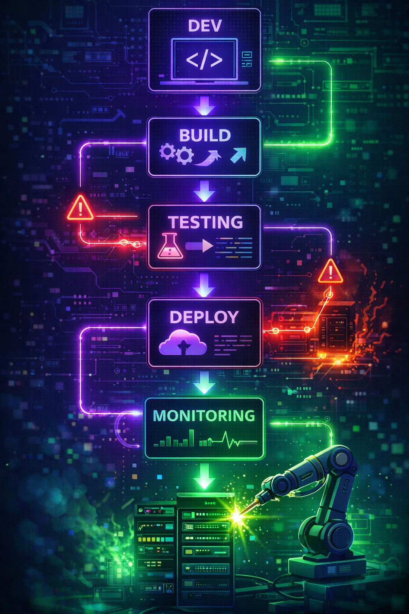

Breaking Things on Purpose: Why Smart Companies Destroy Their Own Systems
A deep dive into the impact that chaos engineering has on systems
February 8, 2026•14 min read•By Joshua Nelson
Chaos engineerring shuts down system servers randomly in an attempt to imporove the reliability.
Image created with OpenAI DALL-E 2 (2023)
Imagine you showed up to work and deliberately crashed your own company's servers during business hours? Sounds insane, right? Like showing up to work and randomly unplugging cables just to see what happens. Yet this is exactly what some of the world's most successful tech companies do on purpose, regularly, and with great success.
Welcome to the world of chaos engineering, where breaking things isn't vandalism - it's science. Where the question isn't "what if something goes wrong?" but rather "when it goes wrong, will we survive it?" In an era where a single minute of downtime can cost businesses over $5,000, and where our digital lives depend on impossibly complex systems with millions of moving parts, chaos engineering has become the unlikely hero in the fight for reliability. Chaos engineering involves intentionally breaking a system to identify its weaknesses. This is crucial in today's technological ecosystem, where complex systems such as distributed architectures and AI are common. The more complex the system, the more prone they are to break. While Netflix popularized chaos engineering in cloud systems, its importance has only grown as modern systems become more complex.
Netflix's 2008 database corruption crisis marked a turning point in how tech companies approach system reliability and disaster recovery.
Source: Spangler, T. (2023). Netflix is shutting down its DVD business. Variety.
The Origin Story: From Netflix's Nightmare to Industry Standard
In August of 2008, Netflix's primary database became corrupted and unusable. Nobody could put data in it or pull it out. This led to a 3-day outage and $3.2 million dollars in lost revenue (ThreadSafe Diaries, 2025). Now, as terrible as this sounds, this was in the 2000s where physical DVDs are being mailed. If this occurred today, the ramifications would be much greater. After this devastating outage occurred, Netflix bounced back and engineered the brilliant "Chaos Monkey"- a tool that intentionally terminates servers to test system resilience. After Netflix created Chaos Monkey, they decided to create a primate army, and orchestrated them to work together to shut down servers randomly every day. This allowed them to regularly sabotage their system and ensure it can self-heal and fully recover. Soon after Netflix started this campaign, other tech giants such as Google and Amazon followed suit.
By deliberately terminating servers, Netflix transformed system reliability testing from reactive firefighting to proactive resilience building.
Image created with OpenAI DALL-E 2 (2023)
What Exactly Is Chaos Engineering?
At the core of chaos engineering is the ability to induce controlled failures and learn from it. This includes increasing latency, causing database crashes, inducing code errors, and more. This practice is commonly referred to as fault injection, where specific failures are deliberately introduced into a system to observe how it behaves under stress. From this idea, we can follow the process of the scientific method: hypothesis, experiment, observation, and analysis. This can provide engineers and analysts a structured and standardized way to test their systems at a large scale.
In traditional testing of systems, known problems are examined and exploited to ensure they don't occur. This confirms that all issues in the known world of technology are dealt with. Chaos engineering on the other hand, is about discovering the unknowns of systems. Instead of asking "does this do what is expected?", it asks "what actually happens when reality goes sideways?" This lens shift helps uncover edge cases that traditional testing might miss. When testing a system, there are 3 types of risks that can be revealed: Known-knowns, Known-unknowns, and Unknown-unknowns.
Known-known risks are revealed through confirming expected behavior with traditional testing, where a known problem is exploited and addressed, with the system's reaction being pre-determined and fixed in nature. Known-unknowns involve understanding unknown outcomes based on the known problem at hand. As you can probably guess, unknown-unknowns are intentionally breaking the system to uncover failure modes that weren't anticipated or known.
Chaos Engineering in Today's Complex Systems
In today's world, every piece of technology is extremely complex, and it's non-negotiable to have a robust recovery plan. Whether the system involves artificial intelligence, financial credibility, software delivery, or any other platform, it must be reliable.
In the new AI frontier, agentic systems are experiencing unique and unseen challenges that have never been solved before. Joshua Owotogbe stated that AI's complex nature "presents additional challenges in real-world reliability testing, as unique production conditions, such as communication breakdowns, resource contention, or emerging agent behaviors, often lead to failures that traditional testing methods are less efficient in detecting" (2025, para. 1). Chaos engineering is an effective way to discover new problems and uncover opportunities for solutions. Without chaos engineering, the testing process would take significantly longer, and traditional testing might not catch all the issues that could arise. While it's crucial to fine-tune AI models to produce accurate results, it's just as, if not more important to fill gaps in security and stability in a standardized system, such as credit card fraud.
Emerging AI agent behaviors and communication breakdowns present testing challenges that traditional methods cannot efficiently detect.
Image created with OpenAI DALL-E 2 (2023)
Credit card fraud detection systems are crucial to any individual to protect your finances and data. Real-world fraud detection systems must operate under unpredictable conditions, where transaction numbers spike, networks slow down, or backend services die. Nagaraj et al. (2025) demonstrate how integrating chaos engineering and site reliability engineering (SRE) creates a production-ready fraud detection system that is both accurate and resilient. Their method combines real-time metrics monitoring and controlled fault injection to ensure the system is taking the necessary steps under stress. Nagaraj et al. (2025) also mentioned that their system achieves a high fraud detection accuracy of 99.64% while maintaining stable performance during chaos experiments such as network latency injection, database failures, and peak transaction loads. This allows financial institutions to uncover hidden weaknesses, prevent silent failures and ensure the system is always operating as intended. While integrating chaos engineering into a working system is great for testing existing reliability, but what about software still being written?

Continuous integration pipelines become more robust when chaos engineering tests are embedded early in the development cycle.
Image created with OpenAI DALL-E 2 (2023)
DevOps is a software engineering culture and set of common practices that combines software development and IT operations to enable faster, more reliable, and continuous software development. However, adopting DevOps introduces a new set of challenges such as ensuring system reliability under frequent software changes. Arsecularatne and Wickramarachchi (2023) state that that chaos engineering can effectively address these challenges by proactively testing system resilience within DevOps environments. By once again injecting failures, teams can identify weaknesses in automation, metrics monitoring, and recovery mechanisms early in the software development pipeline. Integrating chaos engineering into software delivery improves performance by reducing system-wide failures, lowering recovery time, and increasing confidence that future software deployments won't turn your computer into a toaster! This allows the software testers to do more than rely solely on assumptions about the software's behavior. To understand how chaos engineering delivers these reliability gains in various systems, it's important to look at how chaos experiments are designed, executed, and iterated in practice.
The Chaos Engineering Process
When deciding what a "chaos manager" will be doing to a system, you must define what the "steady state" for the system looks like. That is the baseline of your tests, also known as the control. Then, you must define your hypothesis. For example: If I increase the latency of my application by 150%, each user will experience a several second delay. From there, you will inject the failure based in the hypothesis (the independent variable). Then, you will monitor and observe the metrics and behavior of the system during the injection. Once the fault injection has completed, you can analyze the results of experiment. Any observations and theories can be put into improving the system and iterating a better, more resilient version of the system. The process can then be repeated as many times as needed. Now, you don't want to be all gung-ho and modify the 30-year-old code without any help. It's always a good idea to start small and scale over time. This reduces integration issues with the existing software and when issues do arise, they are easier to fix because small changes have made. At this point, we've covered how to break systems responsibly. Now let's talk about why doing so saves a business money, sanity, and a whole lot of late-night incident calls.
Real-time metrics visualization enables teams to observe system responses during controlled failure injection and identify performance bottlenecks.
Chaos engineering delivers real-world benefits by shifting from a firefighting mindset to a proactive approach to reliability. This reduces lost revenue during downtime and enhances customer experience. This application also improves Mean Time to Detect (MTTD) and Mean Time to Recover (MTTR) as engineers already understand failure points and the necessary recovery procedures. Over time, implementing chaos engineering will cultivate confidence within a business and allow failures to be viewed as opportunities to learn, rather than emergencies. From a financial perspective, chaos engineering can prevent costly outages, which for large businesses can average several hundred thousand dollars per hour. These chaos experiments can reveal fragile integrations that traditional testing often misses, ensuring problems are discovered internally rather than by the customer.
Financial analysis shows that preventing outages through chaos engineering saves businesses hundreds of thousands of dollars per hour in potential downtime costs.
Source: LSU Online. (2020). How to become a data analyst: Career path and necessary steps.
Conclusion: Embracing Controlled Chaos
At first glance, chaos engineering may seem counterintuitive, purposefully breaking systems to make them stronger, but its brilliance is hidden like a diamond in the rough. By proactively identifying points that can fail, businesses gain a digital age insurance policy. This allows a business to protect their revenue, customer experience, and operational reliability. This practice suggests starting small, learning from each experiment, and iterating towards more stable systems. In a world where things are inevitably going to break, chaos engineering allows businesses to face those problems on their own terms, rather than on their back foot. The question isn't whether or not chaos will strike, it's whether you'll be ready when it does.
Joshua Nelson
Technology writer specializing in DevOps, systems engineering, and resilience architecture. Passionate about making complex technical concepts accessible.
References
Arsecularatne, M., & Wickramarachchi, R. (2023). The Adoptability of Chaos Engineering with Devops to Stimulate the Software Delivery Performance: A Systematic Literature Review. 2023 IEEE 8th International Conference for Convergence in Technology (I2CT), Convergence in Technology (I2CT), 2023 IEEE 8th International Conference For, 1–5. https://doi-org.lopes.idm.oclc.org/10.1109/I2CT57861.2023.10126414
LSU Online. (2020). How to become a data analyst: Career path and necessary steps. https://online.lsu.edu/newsroom/articles/how-to-become-data-analys/
Nagaraj, P. B., Vallu, V. R., Chaluvadi, A., Pulakhandam, W., Kumar, P. M., & Antonidoss, A. (2025). Integrating MLOps, SRE, and Chaos Engineering for Scalable and Resilient Credit Card Fraud Detection Systems. 2025 3rd International Conference on Sustainable Computing and Data Communication Systems (ICSCDS), Sustainable Computing and Data Communication Systems (ICSCDS), 2025 3rd International Conference On, 9–14. https://doi-org.lopes.idm.oclc.org/10.1109/ICSCDS65426.2025.11167755
Owotogbe, J. (2025). Assessing and Enhancing the Robustness of LLM-Based Multi-Agent Systems Through Chaos Engineering. 2025 IEEE/ACM 4th International Conference on AI Engineering – Software Engineering for AI (CAIN), AI Engineering – Software Engineering for AI (CAIN), 2025 IEEE/ACM 4th International Conference on, CAIN, 250–252. https://doi-org.lopes.idm.oclc.org/10.1109/CAIN66642.2025.00039
Spangler, T. (2023, April 18). Netflix is shutting down its DVD business. Variety. https://variety.com/2023/digital/news/netflix-dvd-business-shut-down-1235587325/
ThreadSafe Diaries. (2025, September 15). The Night Netflix Almost Died. Medium. https://medium.com/@ThreadSafeDiaries/the-night-netflix-almost-died-449fb0127b3d